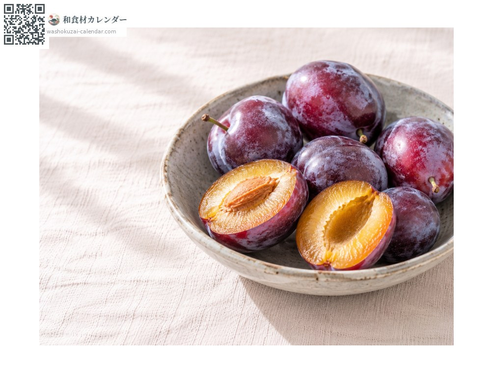
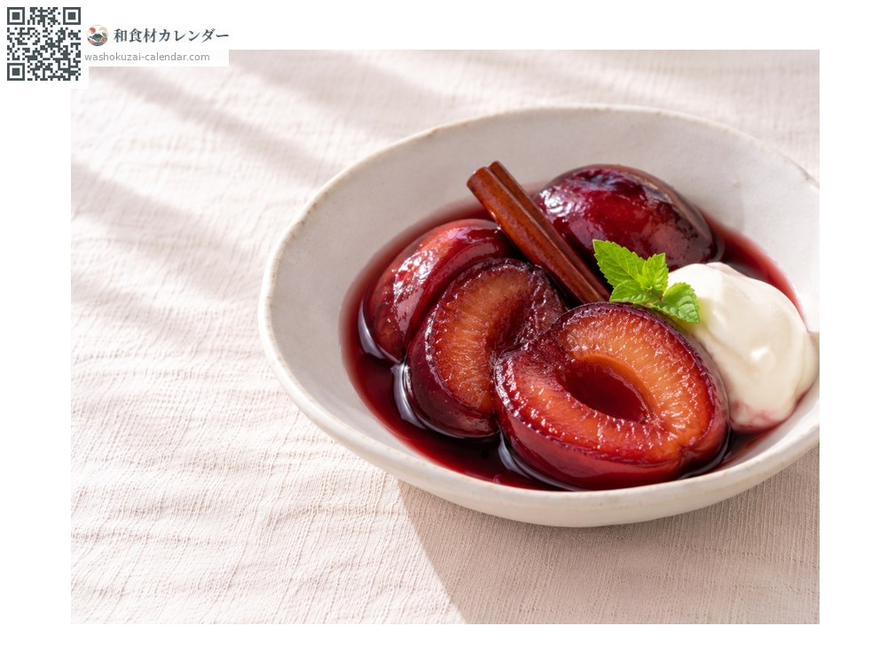
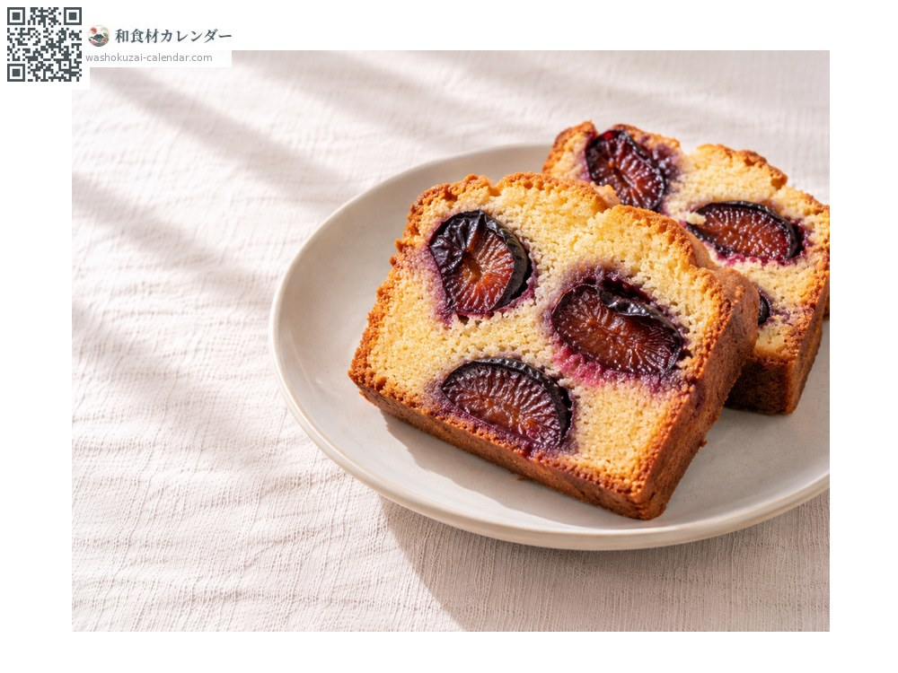
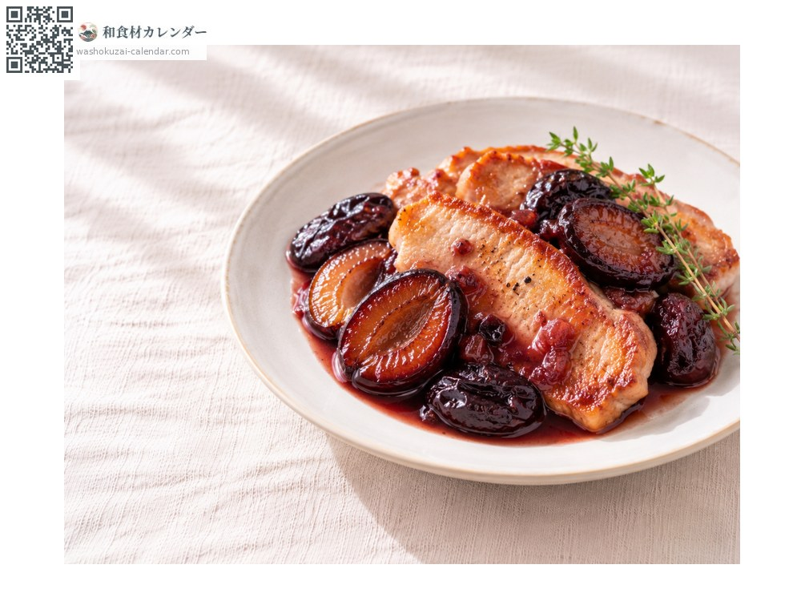

ผลไม้
พรุนสด
プルーン ぷるーん
ชื่ออื่นseiyosumomo, seiyousumomo
อร่อยที่สุดในเดือน ส.ค., ก.ย.

ช่วงที่อร่อยที่สุด
ม.ค.
ก.พ.
มี.ค.
เม.ย.
พ.ค.
มิ.ย.
ก.ค.
ส.ค.
ก.ย.
ต.ค.
พ.ย.
ธ.ค.
ช่วงอร่อยที่สุดมีจำหน่าย
วิธีปรุง

ทานสด
กินได้ทั้งเปลือก ยิ่งสุกยิ่งหวาน

ต้มไวน์แดง
ผ่าครึ่งแล้วต้มกับไวน์แดง น้ำตาล และอบเชย

ปอนด์เค้ก
กดพรุนผ่าครึ่งลงในแป้งแล้วอบ

หมูย่างกระทะซอสพรุน
เสิร์ฟซอสพรุนกับหมูย่างกระทะ
วิธีเลือก
สีม่วงเข้ม มีนวลขาวเกาะอยู่มาก ผิวตึง
วิธีเก็บรักษา
ผลที่ยังแข็งให้บ่มที่อุณหภูมิห้อง เมื่อสุกแล้วแช่เย็นและรีบรับประทาน
แหล่งผลิตหลัก
เกร็ดน่ารู้
พรุนคือพลัมยุโรปพันธุ์ที่ตากแห้งได้ทั้งลูกโดยไม่หมัก ในญี่ปุ่นจังหวัดนางาโนะผลิตส่วนใหญ่และส่งขายแบบสด นวลขาวบนผิวเป็นสิ่งที่ผลไม้สร้างขึ้นเอง และเป็นสัญญาณของความสด